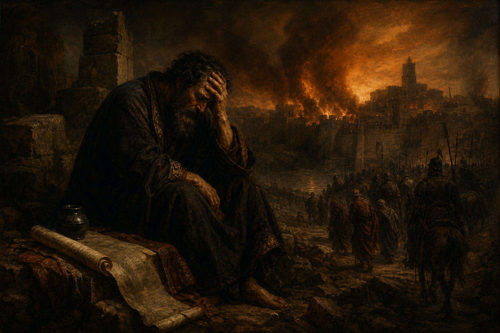

Old Testament · Book 24 of 39
Jeremiah
A reluctant young prophet spends forty years pleading with a stubborn nation to turn back before judgment arrives, and is hated for being right.
Jeremiah is called while still a youth, told plainly that the people will fight against him, and spends his entire ministry watching Judah collapse exactly as he warned, without ever once being believed in time.
Before I formed thee in the belly I knew thee; and before thou camest forth out of the womb I sanctified thee, and I ordained thee a prophet unto the nations.
What happens in Jeremiah
God calls Jeremiah before his birth and sends him to a people who will not listen, warning him in advance that kings, priests, and the public alike will oppose him. Jeremiah confronts Judah's idolatry and false sense of security, smashing a potter's vessel and wearing a yoke to dramatize coming captivity, while false prophets keep promising peace that will never come. He is mocked, beaten, thrown into a muddy cistern, and accused of treason for counseling surrender to Babylon rather than false hope of rescue, yet he keeps speaking because the word of the Lord is, in his words, like fire shut up in his bones. Amid the wreckage he also records one of Scripture's clearest promises of hope: a day when God will make a new covenant, writing his law on hearts rather than stone tablets. The book closes as Jerusalem finally falls to Babylon exactly as Jeremiah foretold, the temple is destroyed, and the prophet is left grieving among the ruins he spent his life warning about.
Why it matters
Jeremiah shows what faithfulness costs when the message is unwelcome and the audience never comes around. His ministry is not measured by visible success but by sheer obedience across decades of being ignored, and his promise of a new covenant written on the heart becomes a direct forerunner to what the New Testament says Christ accomplishes.
Jump to a chapter
Jeremiah has 52 chapters — select one to begin reading there.